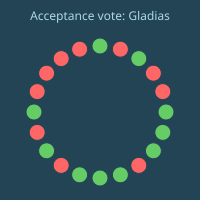
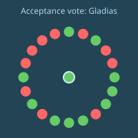

Gladias's watch buzzed as he was walking along the street.
From
Message
Time
Seila
→
[5 images]
34125
He opened up his hand device to see the images more clearly.
Seila was sending photos from Iptak. Gladias was immediately curious. Neither he nor Seila had ever before been to "the aks", as the Veridians liked to call the cluster of Ondak, Iptak, Mantak and Belpaki. The architecture was visibly different, more brick and wood, the colors more red and brown than what he was used to seeing not just in Veridia, but even in pictures of Dzego, or for that matter any of the United Cities that Gladias had been to or seen pictures of.
The signs were in a language that was half alphabet, half pictorial - the sort of thing that Dzegoban had been not too far from before they stripped that out in order to streamline the language.
He pressed a button, responding to Seila with a heart symbol.
"I'm looking forward to your blog", Gladias whispered through his neck band, letting Emerald automatically route that message to Seila.
"I'll be back in a few days!", Seila replied.
At that point, Gladias arrived at the end of the path, at an intersection with the sidewalk along a street. Right in front, there was a sign listing the autobuses that stopped at that point. Gladias saw the number of the autobus that he was meant to take. He stood and began to wait.
Gladias's watch buzzed, and a notification appeared onscreen.
From
Message
Time
Mov
→
Remember that your trial in today is not just about knowledge. It's also about making sure the senators like you.
34576
Gladias sighed, and let his arm drop back down to beside his waist. He continued to wait.
A few minutes later, the next autobus arrived. Gladias checked the number. It was exactly the autobus that he needed. He quickly got on, and the door closed behind him.
Out of the corner of his eye, he saw more people than usual looking intently at their hand devices at that moment. Curious, he stepped forward and quietly looked at what one of the other passengers was looking at.
"Veridia National University", the header at the top of the view on the passenger's hand device said. "Live debate between Professor Sylka, president of VNU, and Lord Ephelion, Arctic ambassador to Veridia".
Sylka was speaking, and Gladias could make out the subtitles.
"Gross economic output alone measures one part of human progress", she said - though Gladias could only see and not hear. "But it becomes a very limiting and impoverished perspective if you start viewing it as the entire goal."
Gladias was curious enough that he whispered to Emerald through his neck band to put up an audio livestream of the debate.
"There is so much more that matters. There is the citizens' health, their emotional well-being, and how healthy the bonds in the society are."
As Sylka finished speaking, the audio livestream connected. Gladias stepped back from the passenger, somewhat embarrassed that he had momentarily violated the passenger's privacy by looking at his screen, and relieved that he was now receiving the feed in a completely ethical way.
"What good is a large car if people feel unhappy because they have no purpose in life? What good is a large house if people feel alienated in their society, and don't have friends to invite to it?"
"What good are the latest electronics, if the people at the bottom use them to hack and steal, the people at the top use them to invade people's privacy and surveil, and everyone all the time uses them to get outraged on social media platforms?"
"Such questions are the entire reason why Veridia has mechanisms like Steering."
Sylka paused. Lord Ephelion started speaking.
"There has now been a century-long tradition of people trying to make better metrics than gross economic output. But what we have seen is that especially over the long term, the countries that perform best on any of those metrics are precisely the ones whose economic output is highest."
"And there is a deep reason for this. Historians have long understood that many phenomena in society move in cycles. The ancients talked about a cycle: flourishing, pride, arrogance, downfall, suffering, rebirth, and then flourishing once again. They said the same thing about governance, and how it inevitably cycles between technocratic, democratic, chaotic and strongman."
"Whenever we talk about the inevitability of rises and falls, it is precisely these 'softer' traits like 'societal cohesion', 'freedom' and 'well-being' that move in this fashion. On those dimensions, the dominant transformation is a rotation: good creates the generator of the bad, which creates the bad, which creates the generator of the good once more."
"And let us be real: these 'softer' traits that people are targeting, they're chosen by committees of priests - selected not for competence, but for echoing whatever ideology strikes people's fancy at the time."
"There is only one thing that stands out from this pattern and offers a truly lasting improvement: the relentless march of economic growth, enabled by the unceasing progress of science, technology, and capital accumulation. While the emotional vibrations in a society cycle between the pride of success, and the desperation of collapse and defeat, with every cycle, people are smarter and richer than before."
Gladias could see the eyes of a few of the people on the autobus watching perking up.
"The Order members are chosen by a sophisticated-"
"Order, please. Ephelion has the floor.", the moderator interjected.
"And so if you want to truly improve a society, in a way that provides lasting value for the long term, you do not focus on the thing that moves in cycles. You do not focus on accelerating the rotation. Instead, you focus on increasing the largest eigenvector. You focus on affecting the thing that has a thousand-year record of compounding on itself, the vector on which good reliably leads to more good. And you let the rest follow the natural laws as it may."
Ephelion stopped, and Sylka cleared her throat, preparing to speak. At that point, Gladias realized that the autobus door was open, and it was already at his destination. He quickly ran out, and Emerald automatically paused the livestream to help him concentrate.
His mind lingered on the debate for a moment longer, and he noticed with faint irritation how easily Ephelion's sentences arranged themselves into an argument that seemed to make sense on its own terms. A gifted demagogue, he concluded. He then refocused on what lay ahead.
Gladias started walking forward along a path covered with trees on both sides. After a few minutes, he saw a large circular building ahead. This was the parliament. The structure was notably different from the intentionally distant and mysterious headquarters of the Order of Steering: it was on ground level, the construction mixing medieval and modern aesthetics, with multiple entrances on all sides.
He kept walking forward, and soon arrived at the entrance.
"Welcome, Gladias, to your selection hearing."
"You have been an Acolyte for four years, and you have reached the ninety-fourth percentile in your prediction score. You have applied to join the Order of Steering in full standing - though whether you're applying to be a Sentinel or a Keeper, that's something that only you and perhaps your most trusted advisors will ever know."
"Today, we will administer the second part of the admissions test: the approval of the Parliament committee. Are you ready to begin the hearing?"
A robot slid up to the chair in the middle of the room where Gladias was sitting, carrying a cup of water. Gladias took the cup, and moved it to the cup holder on the side of the chair.
"I am ready."
"Then let the questions begin."
Twenty senators were sitting on large chairs arranged along the whole edge of the circular-shaped room, spread about two meters apart from each other. In between some of the chairs, there were air filters. Above them, there were bright lights aimed downward, some bright yellow lights to light up the room, and a few faint violet-looking lights to keep the air clean.
In a particularly distinguished seat was the Chairman of the committee. About five senators pressed down on the buttons on their table, requesting to speak.
The system automatically selected one, and lighting around the edge of his seat turned green.
"Senator Verdow, you may ask your question."
"Gladias, tell us about your background."
"Well", Gladias stammered. "I was born thirty-nine years ago. Fairly middle class family, nothing too fancy. I went to a normal school, got good grades, but never got top of the class or anything."
"Why not?"
"I think I was just not motivated to. I tried very hard for one year, got an average of ninety-seven percent. But then I realized that the main emotion I was feeling, was the fear that if I screwed up even once, my beautiful record would be gone. I even avoided taking the harder classes. At the end of that year, I just felt like that was a game not worth playing. So I put in less effort, and started programming, and then studying law, in my spare time, because those things interested me, and I ended up doing decently well in the programming competitions."
"Why did you choose to become an Acolyte?"
"The first hobby project I gave myself when I seriously got into programming as an adult was writing an alternative client for Silverchat. After I finished, I tried to do the same for Bluewhale. And it was so much harder, because they were more closed and proprietary in many ways. That was when I realized just how much value Silverchat's openness was bringing to me that Silverchat itself would never capture. And I had been studying rubrics only a few days before, and it clicked - this, the aspects of a good society that the market alone misses, is exactly why Steering is so important. And so I felt motiv-"
A timer buzzed.
"Next question! Papli."
"What's your favorite band?"
"Err... I don't really have one."
"Favorite game?"
"Don't have one either."
"Favorite sport?"
"I remember enjoying playing Colorball when I was a kid? The school game that Helisport ended up being based on."
"How can we possibly trust you to judge on our society's behalf, when you're so out of touch with so much of regular Veridian people's lives?"
"Isn't this why citizens' assemblies and broad listen reports exist, and why a Keeper group has months to listen to both before it makes its decision on a rubric? And isn't this why Keepers and Sentinels are allowed to specialize? I probably won't be deciding on anything that has to do with sports."
"What do you think of Dzego?"
"I like their food. I only started learning more about their history recently. My wife met a couple of Dzegojan kids and they seemed nice. In general, I feel for their plight, I hope we could find a way to support them more."
"Aha, so you want us to support Dzego, and you want us to make our social networks more open so that some super smart kids can play with them more easily. But I haven't seen you talk once about something that a regular Veridian would care about, that affects their lives."
"You don't think increasing hardware openness allows more mechanics to join the market, which makes owning things cheaper-"
"Well what about the salaries of the mechanics themselves!"
Gladias started formulating a response in his head. Economics was a basic part of the curriculum for anyone training to be an Acolyte, and so he could immediately recognize the fallacy.
On the one hand, every dollar of price increase in repair was a dollar taken from a customer but given to a mechanic, so from that view the good and the bad balanced out. But on the other hand there were second order effects: reducing the cost of ownership of goods means that people can use the money they saved to buy other things, which means more jobs get created somewhere else. Ignoring this was the fallacy of all naive economic interventionism done in the name of politics: favoring the seen at the expense of unseen.
It took him about three ticks to formulate the structure of this argument in his head. But then he realized that it would take him about twenty ticks to speak it - when the timer on the clock had only four ticks left. Gladias gave up, and simply did not respond.
The timer buzzed.
Gladias began to sweat nervously.
"Senator Ancus?"
"What was the last thing you voted on for the aesthetics tax?"
"A blue and grey building on Badra street. It was hard to decide, it was just average, nothing out of character in a bad way, but also nothing exceptional. Whenever I pass by it, there were always families coming in and out, people even sitting on the benches outside. Children occasionally selling food they make. But that's normal for Meldan these days. So I just gave it a very tiny vote of approval."
"What was the last thing you wished you could have voted on?"
"A Hydrafill billboard. The one that talked about their drinks being free of over 2,000 poisons and anti-recommended substances."
"Why?"
"The ad was fun. I still remember when I was young, and all the ads were boring or just painful to look at. They were just trying to get inside your head, that's all they cared about. It's especially bad when they do that on public transit; if the public transit experience is bad then even more people switch over to cars and we get more pollution and congestion and that's bad for everyone. I was glad that Hydrafill tries so hard to be better than that."
"Papli", Ancus shouted, whipping his head toward Papli. "Don't you think families enjoying the outdoor environment, good public transit, and fun are all things that regular Veridians value a lot?"
Papli did not answer.
"Keep the conversation between the asking Senator and the applicant", the Chairman interjected.
"I think so. Maybe Papli would say Hydrafill's style of humor is pretentious smart people humor or something like that."
"But I think he underestimates Veridians, and just how smart many of them are. I was on the autobus coming here, when Sylka was debating Ephelion on how to measure social progress, and people seemed really engaged when she was speaking."
"That's just the smug smart people's version of enjoying watching people fight. Helisport is actually more peaceful", Papli interjected. "At least the Quadratic Funding funds Helisport games. We should get rid of you guys and just make a negative version of Quadratic Funding and use that to calculate the taxes on all the big businesses."
"Order!", the Chairman shouted. "Next question."
The questioning continued for another half longhour, as each Senator got a chance to ask.
After the last Senator asked Gladias his question, and the timer buzzed, the Chairman stood up.
"Time for the vote!"
The YES and NO voting buttons were clearly visible on the table, so Gladias could make out any Senator's vote just by looking at them.
The Senators started pressing down on their buttons. A different noise buzzed every time a vote was made. Within ticks, every vote had been cast. Gladias looked toward the screen near the top of the room.

"Wow", the Chairman exclaimed. "Ten to ten, exactly. By the rules of Acceptance voting, I am the deciding vote. And so I vote..."
He pressed down on one of the two buttons on his desk.
"Yes."

"Welcome to the Order, Gladias."
Once Gladias left the building, he checked his watch. There had been loud buzzing while the acceptance session was in progress, and he had been ignoring it.
From
Message
Time
Vil
→
Sorry to bother you, but it's about Lily. She just failed a test in civics class. I think she would benefit from seeing you and Seila.
45183
Seila's still in Iptak, Gladias thought. He would have to go himself.
Gladias did not bother asking Emerald for a route to Vil's house. He knew it himself, it was not too far. He started walking, his mind filled mostly with concern for Lily's wellbeing, and slightly - perhaps more than he was willing to admit - frustration that his triumph was so quickly replaced by dread, a feeling that he was faced with a problem he had no idea how to solve.
"I'm coming", Gladias whispered into his neck band - once again, not out of any strong desire to conceal his privacy at that moment, but because by that point he was simply accustomed to whispering. "Get me the usual food I get. I just got out of my acceptance hearing so I'll be hungry."
From
Message
Time
Vil
→
Did you at least get accepted?
45501
"I did. Just barely though."
After twenty minutes of walking, Gladias arrived at Vil's house. Vil opened the door for him, and then sat back down in his chair. Lily was sitting on the couch, crying.
Gladias sat down on the couch beside Lily, and hugged her.
Gladias waited for a few moments, and began to speak.
"It's all right", he whispered. "Scores aren't everything. Vil, Daia, Seila and I all know the beautiful person that you are inside, and we love you."
Lily turned her face away, unhappy.
"We can help you. We just have to find some way to engage with the material that you can relate to."
"You've already tried", Lily replied softly, sobbing. "I got fifty-nine percent on this test. FIFTY-NINE PERCENT. Third-worst in the class."
"Well, do you think the smartest kid in your class can bake a birthday cake for Seila the way you did six months ago? Would he bring food to Hreda every day for a month the way you did when she was recovering from that accident years ago?"
"You need to realize that you're a beautiful person already. That's where self-confidence comes from, and that's where you can get your motivation to improve."
"These schools really need to get better at connecting these topics like civics to topics that matter in your life. I only went down my path to become an Acolyte because I saw how the Steering incentives were helping to open up the online world so I could participate and write code for it. You will have your moment too."
"If you get above seventy-five on your next civics test", Vil said, "I'll take you on my next trip up to Northglade."
Gladias winced slightly at the crudeness of the incentive - though he figured in the back of his mind that it was worth a try.
At that moment, the doorbell buzzed. Vil stood up and walked toward the door, and opened it. It was the food.
Vil picked up the food, and put it down on the table. Vil and Gladias together began to open it.
Lily slowly stood up, and also joined the table. The three of them began to eat.
Gladias's watch buzzed.
From
Message
Time
Mov
→
[call requested]
59063
He picked up.
"Mov, how are you?"
"I have some interesting news to share. But first of all, you got in, right?"
"Just barely."
"In is in."
"So what's your update?"
"Looks like we're not going to be Keepers after all. The cryptographic random gods selected me to become a Herald starting next term."
"Wow."
"Yep. So as of today, I have no more formal power."
"What do you expect you will do as a Herald? I can't imagine you actually running those assemblies or giving speeches or anything like that. Are you just going to go moderate a sub-forum on Silverchat?"
"You know me too well. But also, I'll have more time to help you."
That evening, Gladias called Seila.
"I got in!", he said excitedly.
"I knew you would!"
"It came quite close. Ten to ten, the Chairman broke the tie."
"A win is a win. Ever since you told me you were going to go Keeper, I've been so excited about all the good you can do from that role."